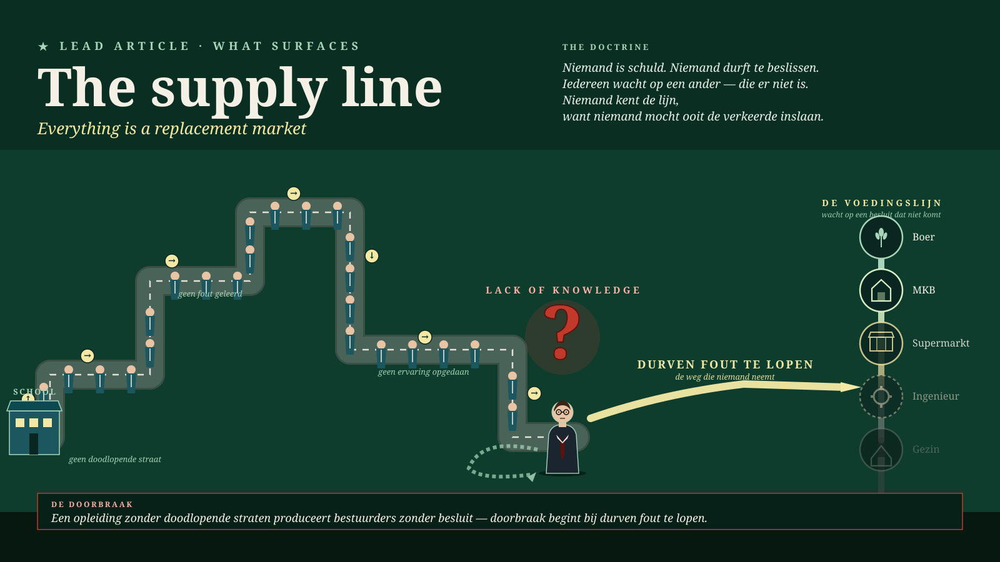

Malta, June 2026 · Methodology
The food line — everything is a replacement market
The courage to say it is wrong is absent through lack of self-knowledge — a structural fault, not a character flaw. All of Europe has bricked up its detours; no genuine decision can be taken anywhere. The laws made by those who came before us do not know the future — nature does, with three billion years of experience, and must lead again.
Read the full piece →